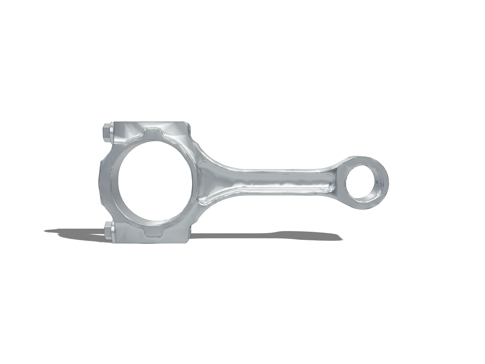
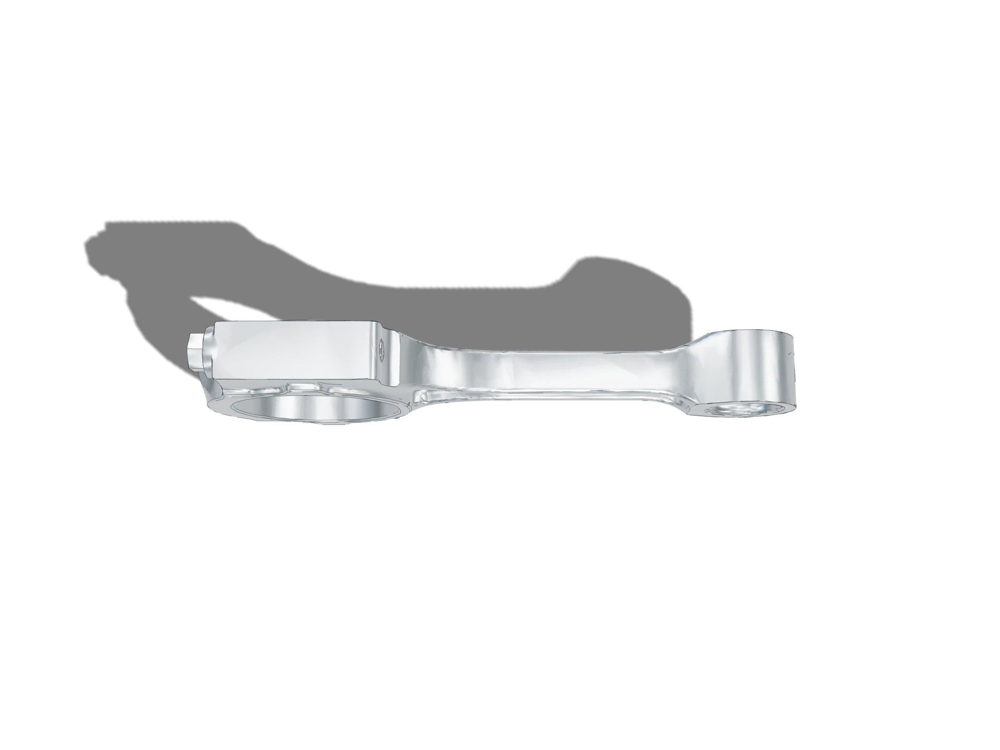

Connecting rod
A forged aluminium rod for the PS-0891 piston, with the big-end cap bolted rather than cracked so the bore can be honed as one circle after assembly.
CR-0964 · 2618-T61 forging · 190 × 81 × 23 mm

Finish
About this part
The big end is the part that decides everything else. It is a bore that has to stay round under a load that reverses twice per revolution, split across a joint that has to close again to within a few microns every time it is torqued.
So the cap is bolted and dowelled rather than fracture-split, and the bore is honed with the cap fitted and torqued. The rod and cap are then a matched pair for life — marked as such, because a cap fitted to the wrong rod puts a step in the bearing bore.
The shank is an I-beam because the rod is a column in compression and a tie in tension, and an I-section is the cheapest way to be adequate at both. The web thins toward the small end, where the inertia load it has to carry is lowest.
| Material | 2618-T61 forging |
|---|---|
| Process | CNC mill, bores honed |
| Envelope | 190 × 81 × 23 mm |
| Mass | 612 g |
| Key tolerance | ⌀54 H6 big-end bore |
| Mesh | 15 722 triangles · 768 KB |
| Finish | — |
| Roughness | — |
| Centres | 155 mm between big and small end |
|---|---|
| Big end | ⌀54 H6, honed with the cap torqued |
| Small end | ⌀22 H6 for the gudgeon pin |
| Load | Fully reversing, twice per revolution |
| Must not | allow a cap to be fitted to a different rod |
| Rev | Change | Why |
|---|---|---|
| Rev A | First issue | Fracture-split cap |
| Rev B | Cap bolted and dowelled | Split faces would not repeat; the bore went oval |
| Rev C | Bore honed after assembly | Roundness measured with the cap torqued, not before |
| Rev D | Released for quote | Rod and cap match-marked, small end thinned |
Plates
Rendered from the same model, in the finish this part ships in.

